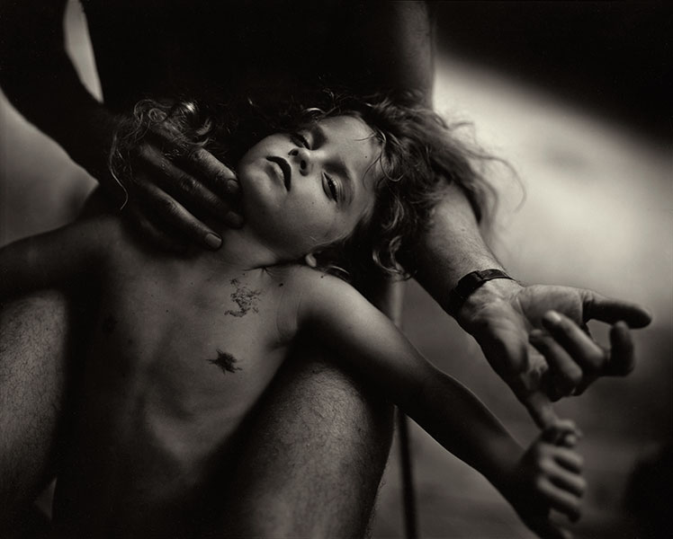
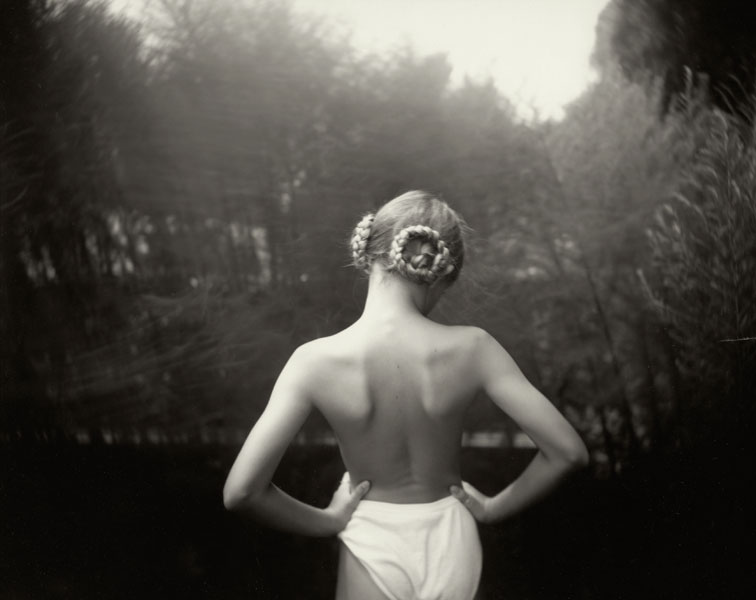

Sally Mann (born in Lexington, Virginia, 1951) is one of America’s most renowned photographers. She has received numerous awards, including NEA, NEH, and Guggenheim Foundation grants, and her work is held by major institutions internationally. Her many books include What Remains (2003), Deep South (2005), and the Aperture titles At Twelve (1988), Immediate Family (1992), Still Time (1994), Proud Flesh (2009), and The Flesh and the Spirit (2010). A feature film about her work, What Remains, debuted to critical acclaim in 2006. Her memoir, Hold Still (Little, Brown, 2015), received universal critical acclaim, and was named a finalist for both the National Book Award and the Andrew Carnegie Medal for Excellence in Nonfiction. Mann is represented by Gagosian Gallery, New York. She lives in Virginia.

“Few photographers of any time or place have matched Sally Mann’s steadiness of simple eyesight, her serene technical brilliance, and the clearly communicated eloquence she derives from her subjects, human and otherwise – subjects observed with an ardor that is all but indistinguishable from love.”
— Reynolds Price, TIME